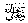
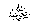
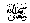
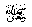

commanded us to beg two things which we cannot do without, firstly to
beg Allahfor entrance into Jannah
and secondly to ask for protection in Him from Jahannam.
commanded us to beg two things which we cannot do without, firstly to
beg Allahfor entrance into Jannah
and secondly to ask for protection in Him from Jahannam.
The Hadeeth also says that it is the month of sympathy and kindness, especially for the poor and needy. Sympathy should be of a practical nature. When ten things are placed before us for iftaar, at least two or four of them should be set aside for the poor and needy. They should be treated more favourably, if not then at least equally, and should certainly be remembered. The Sahaabahwere living examples in showing sympathy for the poor. It is our duty to follow or at least try to follow them.
Let us see the following example, Abu Jahmrelates that, during the battle of Yarmouk, he went in search of his cousin, taking with him a water bag to give him to drink and also wash his wounds if he was found alive or wounded. He found him lying among the wounded. When I asked him whether he wanted some water, he said ‘Yes’. At that moment someone near him moaned. My cousin pointed to that person indicating that I should first give him the water. I went to him and found that he too needed water, but just as I was about to give him the water, a third person groaned near him. The second one pointed to this third person meaning that I should give the third one to drink first. I went to the third person but before he could drink, I found out that he had passed away, I then returned to the second one only to find that he too had passed away. When I came back to my cousin, he too had become a shaheed.
This is the type of caring character our Sahaabahhad. They preferred to die thirsty rather than to drink before a Muslim brother. May Allahbe pleased with them all and grant us ability to follow in their footsteps. Aameen
Another Hadeeth
says that whoever feeds the hungry, clothes the naked and gives shelter
to the traveller, Allah 
During Ramadhaan, Hammad bin Salamah, a very famous Muhaddith, used to feed fifty people every day at iftaar. (Roohul Bayan)
Thereafter, the Hadeeth of Rasulullahcalled the first section (i.e. first 10 days) of Ramadhaan the coming of mercy, which means that Allah’sfavour is with the believers. Those who are thankful to Allahfor His bounties will receive even more. The Qur-aan says:
“If you are thankful, I will surely grant you more.”
During the second section (i.e. the second 10 days) of Ramadhaan, forgiveness begins to come down as a reward for fasting during the first section. The last section (i.e. the last 10 days) of Ramadhaan brings protection from entrance into Jahannam.
In my personal opinion, Ramadhaan has been divided into three sections because people are normally of three different kinds. Firstly, there are those who have no sins. For them Allah’s mercy and Bounties come from the very beginning of Ramadhaan. Secondly, there are those whose sins are not too heavy, for them forgiveness comes after one third of Ramadhaan has passed. Thirdly, there are the real sinners. For them forgiveness comes after having fasted most of Ramadhaan. Those who received Allahmercy right at the beginning are the very fortunate ones because of the great amount of mercy they have received. (And Allahknows best).
Another point mentioned in the Ahaadeeth is that masters should be merciful to their servants in Ramadhaan because, after all, they too are fasting. Unnecessary hard work or too much of it will be difficult for them. An extra worker should be hired when the work is too much.
Lastly, Rasulullahencouraged four things in the Hadeeth
that should be repeated constantly. Firstly, the recitation of Kalimah Tayyibah, which in the Ahaadeeth is called the highest form of zikr. In Mishkat, Abu Saeed Khudri   
The second thing which should be recited plentifully is istighfaar. The Ahaadeeth report many rewards of istighfaar. In one Hadeeth we read, “Whoever makes much Istighfaar, Allahopens a way out for him from all problems and removes all sadness from him. He also receives rizq (food, money etc.) from unexpected places.” In another Hadeeth, Rasulullahsaid that, “Every man is a sinner, but the best among the sinners are those who repent and ask for forgiveness.” In one Hadeeth it is mentioned that, “When a man commits a sin, a black spot forms on his heart, but when he asks for forgiveness, it is washed away , if not, the black spot remains”.
Thereafter, Rasulullahcommanded us to beg two things which we cannot do without, firstly to
beg Allahfor entrance into Jannah
and secondly to ask for protection in Him from Jahannam.
May Allahgrant us this good fortune. (Aameen)